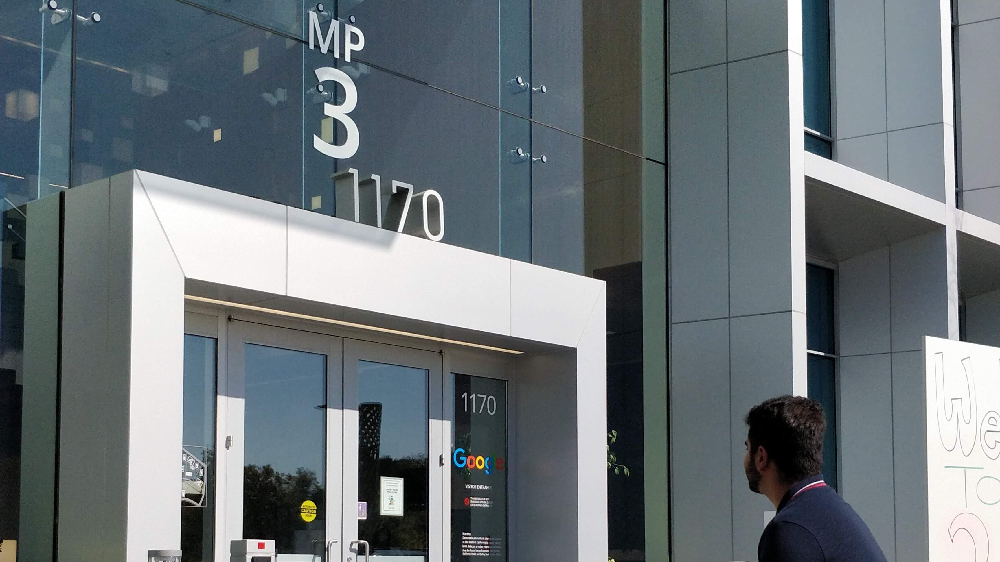

About Me
Hello, I'm Omar and I'm glad you made it here. As a 22-year-old Software Engineer with a keen interest in Product Management, I graduated from the University of San Francisco with a Bachelor's degree in Computer Science in under four years. I started developing software in high school and have since gained experience in Java, Python, C, HTML, CSS, JavaScript, and React Native.
My passion as a Developer and Product Manager is to use my soft and hard skills to improve the products and services I use daily. I believe that finding a job you enjoy doing means you never have to work a day in your life. Pursuing passion projects at the intersection of my hobbies and technical know-how has enabled me to unlock a new level of creativity and dedication, building products that help improve the lives of my family and friends.
My academic and work experience has given me the skills to apply my technical know-how to practical scenarios. Starting with simple text-based games, I have since developed sophisticated algorithms, including building an in-memory search engine and implementing the ‘Six Degrees of Kevin Bacon’ using trees and graphs. I have also worked as a Software Engineer and Technical Program Manager with Onriva, where I refactored and debugged parts of the company’s existing codebase, and migrated all development teams from the Waterfall methodology to an Agile workflow using the sprint-based Scrum framework. This led to a substantial increase in developer productivity.
In addition, I worked with Mapbox Inc. to develop a tool that converts GeoJSON map data into the highly scalable SVG file format. I have also worked at Gumdrop, where I improved the existing mobile application and introduced upgrades to it. My willingness to learn the ropes of management led to me being retained by the company as a product, project, and program manager, conceptualizing new features and assuming the role of the Lead Developer to implement them.
Outside the realm of Computer Science, I have worked as a Product Specialist at Apple and a Sales Associate at Uniqlo, where I gained valuable skills in troubleshooting technical issues, prioritizing customer satisfaction, and communicating effectively in a respectful and collaborative manner. I have also been a youth leader at the Yaseen Foundation, where I have taken on leadership roles and worked in teams with people from a variety of ages, backgrounds, and experience levels.
Since graduating in 2022, I have been seeking roles where I can bring my full range of skills as a Software Engineer, Product Engineer, Sales/Customer Engineer, APM, and Product/Project and Technical Program Manager. If you would like to reach out about any such opportunities, please don't hesitate to contact me.